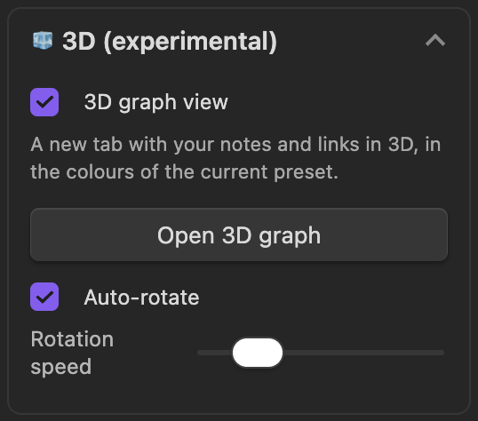

Keep the colors you use to classify notes
If you already use group colors, turn on Keep my color groups before applying a preset. New in 0.4.1.
- Rules, order and colors stay intact, including with Mono and live preview. Glow can still change apparent brightness.
- Off by default. When on, group color pickers are disabled and local graphs keep their own groups. The setting stays in this vault and is not shared in a preset code.
- It does not recover previously replaced groups. With it off, presets apply automatic groups and Mono clears groups.
Open the 3D graph


Expand 🧊 3D (experimental), enable the view and select Open 3D graph. Off by default; experimental behavior may change.
Layout and Look are separate: three layouts (Force, Orbital, Globe) and two looks (Original, Deep Space).
| Layout | What it shows | Keep in mind |
|---|---|---|
| Force | Notes spread by link and repulsion forces | Default layout. Distances and collision behavior differ from 2D. |
| Orbital | Shells based on shortest link distance from a selected center | Search for a center; automatic uses the most-connected visible note. |
| Globe | Color groups placed in regions on a sphere, linked by curved arcs | Positions do not represent geography or semantic distance. |
Drag to rotate, scroll or pinch to zoom, Shift-drag or right-drag to pan. Hover for a name and highlighted links; click to open the note. Auto-rotate can be turned off.
Reopen the 3D tab after changing filters. It snapshots visible nodes and links from the open global graph; filters do not update live. Without a global graph it uses all Markdown notes, not the local graph. Color groups support path: and tag:; arbitrary queries, arrows and text-fade settings do not all carry over.


Already installed?
Use Settings → Community plugins → Check for updates and update Graph Styler. Check that its version is 0.4.1. For manual installation, put the release's main.js, manifest.json and styles.css in the plugin folder.
Checked: 2026-10-14 · Desktop only · Guide: @phd.ai.log · Plugin: Moonweave
0.4.1 release ↗ · Full documentation ↗ · Obsidian graph help ↗